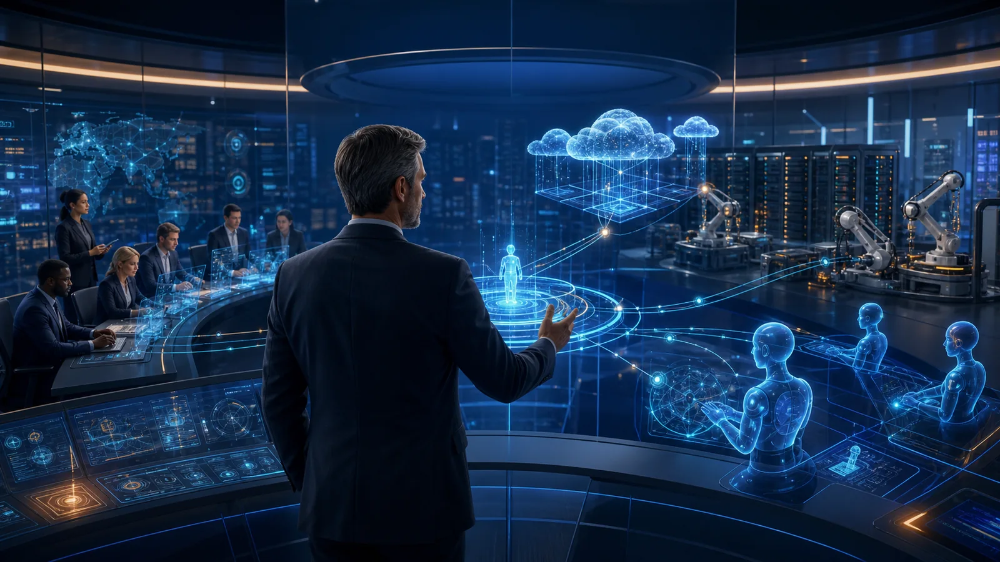

The Next CISO Will Lead Humans, Machines and AI Agents; Not Just People
The next CISO will not only lead people. They will govern intelligent machines and AI agents acting across the enterprise.

For many years, cybersecurity leadership has been about leading people.
Building capable teams. Defining governance. Managing technology. Influencing executives. Responding to incidents.
Those responsibilities are not disappearing. But something significant is changing.
The workforce is no longer made up of only humans.
Every day, organisations are introducing AI coding assistants, autonomous security analysts, intelligent workflow automation and AI agents capable of making decisions within predefined boundaries. They can write software, analyse logs, review configurations, draft reports and even initiate operational actions.
The next CISO will not only lead people. They will also be responsible for governing intelligent machines.
This is not a future prediction. It is already happening.
In a previous article, A CISO Cannot Lead Every Operating Model the Same Way, I discussed how leadership must adapt to different organisational operating models. The emergence of AI introduces another shift; one where the operating model itself begins to include non-human participants.
That changes cybersecurity leadership in fundamental ways.
AI agents are becoming operational users
Traditional governance assumes that every action can be traced back to an employee.
Tomorrow, many actions will be initiated by software.
An AI agent may:
- create infrastructure;
- generate application code;
- analyse security events;
- approve low-risk operational requests;
- investigate alerts; or
- coordinate remediation activities.
Each action still carries business risk.
The question is no longer whether AI can perform these tasks.
The question becomes:
Who is accountable when an AI agent performs them?
Identity is becoming more important than workforce size
As organisations deploy more AI agents, the number of non-human identities may eventually exceed the number of employees.
Each AI agent requires:
- an identity;
- permissions;
- authentication;
- activity logging;
- behavioural monitoring; and
- lifecycle management.
An AI agent with excessive privileges creates the same security risk as an over-privileged administrator.
Perhaps an even greater one, because it can operate continuously at machine speed.
Cybersecurity teams have spent years managing privileged human accounts.
Soon, they will need to manage thousands of privileged AI identities.
Security governance must become machine-readable
Policies written as PDF documents are useful for auditors.
They are less useful for machines.
AI agents cannot reliably interpret lengthy policy documents before making operational decisions.
Increasingly, governance will need to become executable.
Security policies, architectural guardrails and approval requirements will be expressed as code, APIs and automated control logic.
Instead of asking whether employees followed policy, organisations will increasingly ask whether AI systems were technically prevented from violating it.
That represents a significant shift in governance.
Security architecture becomes the operating system for AI
AI agents cannot rely on judgement alone.
They rely on the environment that humans design.
That makes security architecture even more important.
A well-designed architecture determines:
- what AI agents can access;
- where trust boundaries exist;
- how permissions are enforced;
- what activities are monitored; and
- when human approval becomes mandatory.
In many ways, architecture becomes the operating system that governs autonomous decision making.
The better the architecture, the safer the AI.
The CISO's leadership is expanding
Historically, cybersecurity leaders managed people, budgets and technology.
Tomorrow they will also govern autonomous digital workers.
Success will depend less on supervising every action and more on designing systems that consistently make safe decisions.
That requires a broader combination of skills.
Security architecture.
Identity governance.
AI governance.
Risk management.
Automation.
Digital trust.
These disciplines are becoming increasingly interconnected.
The role of the CISO is evolving from managing cybersecurity operations to governing secure digital ecosystems where humans and AI work together.
Final thought
The organisations that succeed with AI will not necessarily deploy the most intelligent models.
They will deploy the best-governed ones.
The next generation of cybersecurity leadership will not be measured only by how well people are managed.
It will also be measured by how safely machines are trusted to act on the organisation's behalf.
Because the next CISO will not simply lead a cybersecurity team.
They will lead an enterprise where humans, machines and AI agents operate together under a single framework of trust.
Share this article
If this perspective was useful, share it with your network.